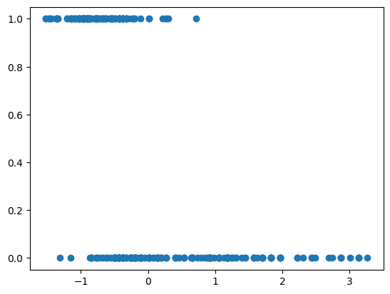
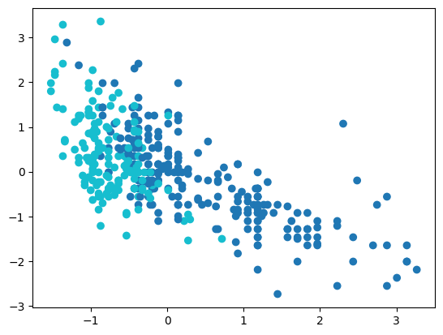
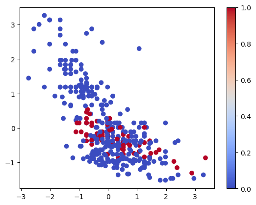
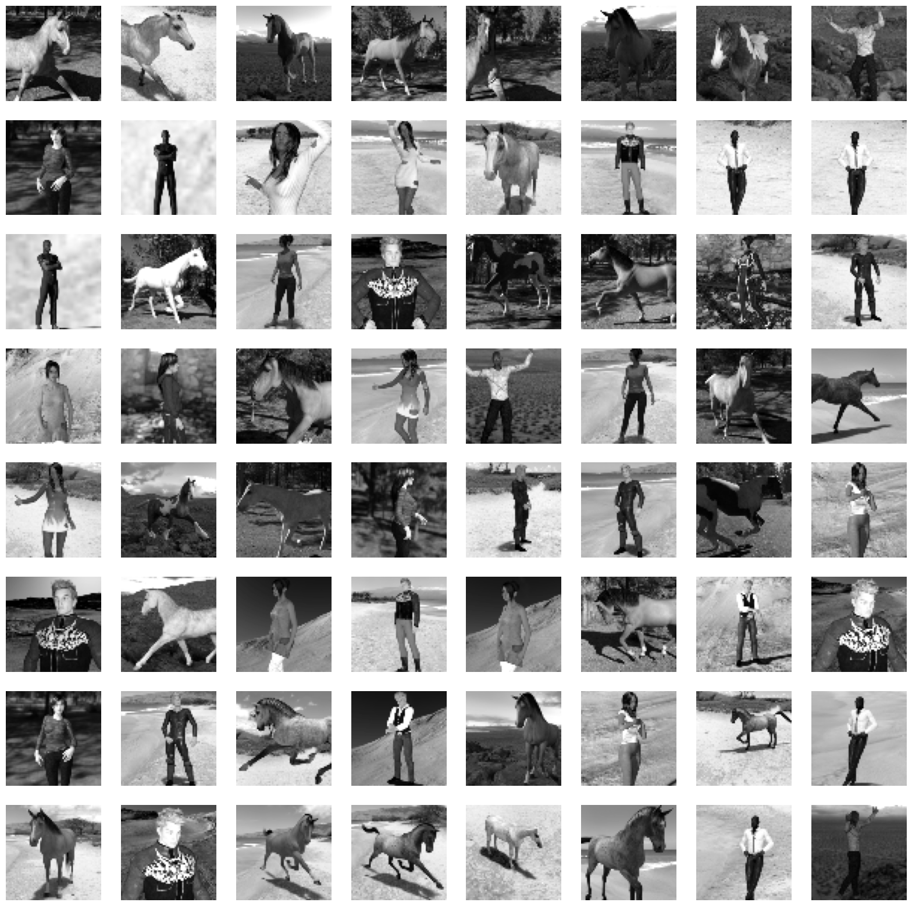
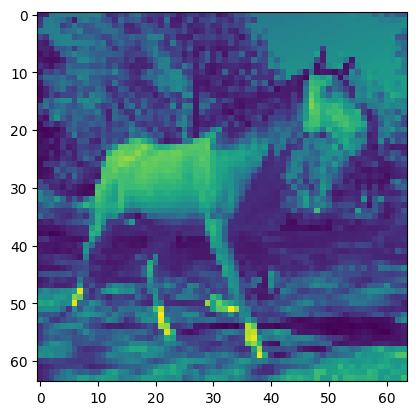
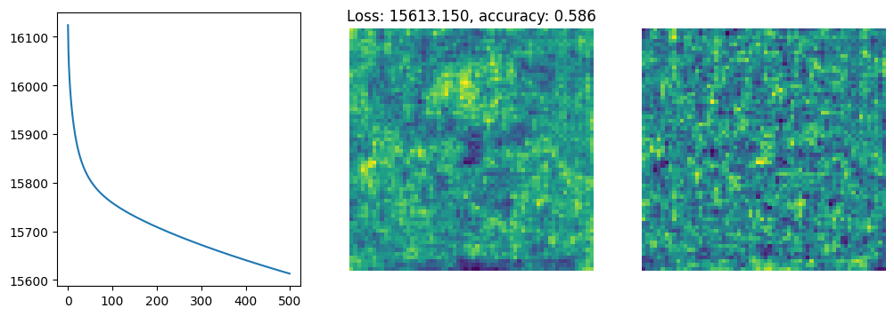
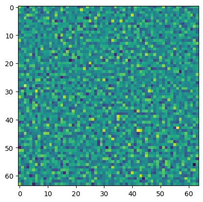
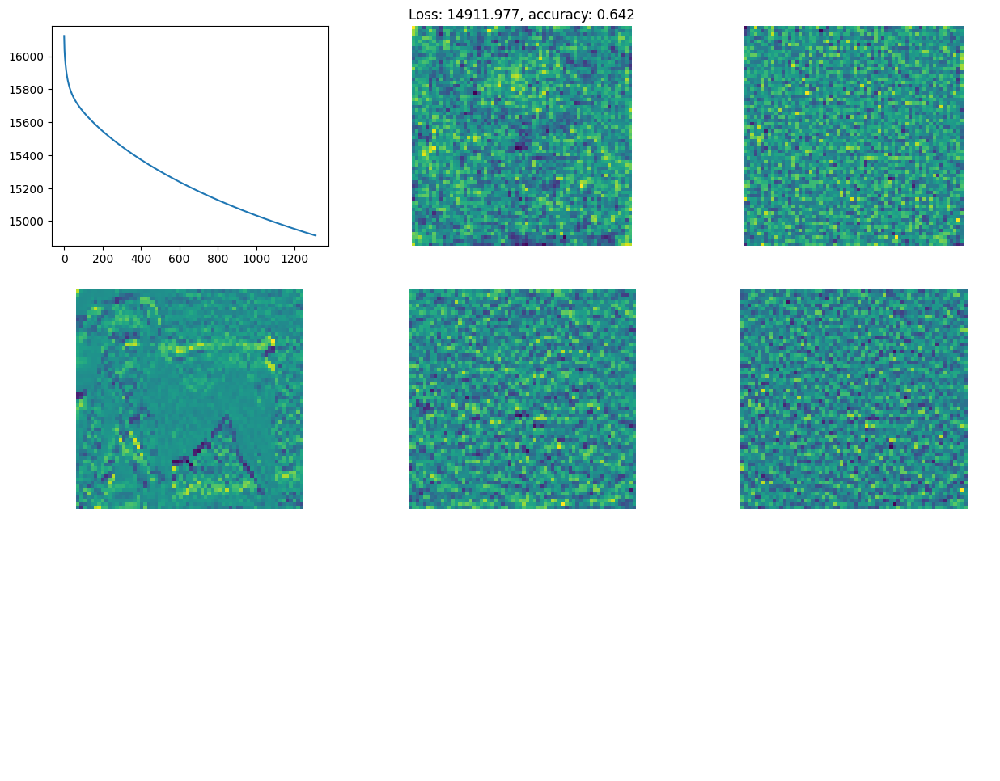

import pandas as pd
import numpy as np
import matplotlib.pyplot as plt
import seaborn as sns
#sns.set_style('white')
Logistic regression
mpg_data = pd.read_csv('data/auto-mpg.csv', na_values='?').dropna()
mpg_data| mpg | cylinders | displacement | horsepower | weight | acceleration | model year | origin | car name | |
|---|---|---|---|---|---|---|---|---|---|
| 0 | 18.0 | 8 | 307.0 | 130.0 | 3504 | 12.0 | 70 | 1 | chevrolet chevelle malibu |
| 1 | 15.0 | 8 | 350.0 | 165.0 | 3693 | 11.5 | 70 | 1 | buick skylark 320 |
| 2 | 18.0 | 8 | 318.0 | 150.0 | 3436 | 11.0 | 70 | 1 | plymouth satellite |
| 3 | 16.0 | 8 | 304.0 | 150.0 | 3433 | 12.0 | 70 | 1 | amc rebel sst |
| 4 | 17.0 | 8 | 302.0 | 140.0 | 3449 | 10.5 | 70 | 1 | ford torino |
| ... | ... | ... | ... | ... | ... | ... | ... | ... | ... |
| 393 | 27.0 | 4 | 140.0 | 86.0 | 2790 | 15.6 | 82 | 1 | ford mustang gl |
| 394 | 44.0 | 4 | 97.0 | 52.0 | 2130 | 24.6 | 82 | 2 | vw pickup |
| 395 | 32.0 | 4 | 135.0 | 84.0 | 2295 | 11.6 | 82 | 1 | dodge rampage |
| 396 | 28.0 | 4 | 120.0 | 79.0 | 2625 | 18.6 | 82 | 1 | ford ranger |
| 397 | 31.0 | 4 | 119.0 | 82.0 | 2720 | 19.4 | 82 | 1 | chevy s-10 |
392 rows × 9 columns
y = mpg_data['mpg'].values > 25
X = mpg_data[['weight', 'displacement', 'acceleration', 'horsepower']].values
X = (X - X.mean(axis=0, keepdims=True)) / X.std(axis=0, keepdims=True)
plt.scatter(X[:, 3], y)<matplotlib.collections.PathCollection at 0x17ac39df0>
plt.scatter(X[:, 3], X[:, 2], c=y.astype(int), cmap="tab10")<matplotlib.collections.PathCollection at 0x17e930430>
def predict(x, w, b):
return x[0] * w[0] + x[1] * w[1] + x[2] * w[2] + x[3] * w[3] + bdef predict(x, w, b):
return np.dot(x, w) + bw = np.ones((4,))
y_pred = predict(X, w, 0) > 0accuracy = np.mean(y_pred == y)
accuracy0.20153061224489796plt.scatter(X[:, 2], X[:, 3], c=y_pred == y, cmap='coolwarm')
plt.colorbar()<matplotlib.colorbar.Colorbar at 0x29e1a7a00>
import tensorflow as tf
import tensorflow_datasets as tfds
import matplotlib.pyplot as plt
import autograd.numpy as np
mnist = tfds.image_classification.MNIST()
mnist.download_and_prepare()
data = tfds.as_numpy(mnist.as_dataset(split='train', as_supervised=True).batch(100000))
images, labels = next(iter(data))
images, labels = images[labels <= 1][:, :, :, 0].astype(float) / 128 - 1., labels[labels <= 1].astype(float)import tensorflow as tf
import tensorflow_datasets as tfds
import matplotlib.pyplot as plt
import autograd.numpy as np
hh = tfds.image_classification.HorsesOrHumans()
hh.download_and_prepare()
data = tfds.as_numpy(hh.as_dataset(split='train', as_supervised=True).map(lambda x, y: (tf.image.resize(
tf.image.rgb_to_grayscale(x), (64, 64)), y)
).batch(100000))
images, labels = next(iter(data))
images, labels = images[labels <= 1][:, :, :, 0].astype(float) / 128 - 1., labels[labels <= 1].astype(float)import tensorflow as tf
import tensorflow_datasets as tfds
import matplotlib.pyplot as plt
import autograd.numpy as np
cd = tfds.image_classification.CatsVsDogs()
cd.download_and_prepare()
data = tfds.as_numpy(cd.as_dataset(split='train', as_supervised=True).map(lambda x, y: (tf.image.resize(
tf.image.rgb_to_grayscale(x), (64, 64)), y)
).batch(100000))
images, labels = next(iter(data))
images, labels = images[labels <= 1][:, :, :, 0].astype(float) / 128 - 1., labels[labels <= 1].astype(float)Corrupt JPEG data: 99 extraneous bytes before marker 0xd9
Warning: unknown JFIF revision number 0.00
Corrupt JPEG data: 396 extraneous bytes before marker 0xd9
Corrupt JPEG data: 162 extraneous bytes before marker 0xd9
Corrupt JPEG data: 252 extraneous bytes before marker 0xd9
Corrupt JPEG data: 65 extraneous bytes before marker 0xd9
Corrupt JPEG data: 1403 extraneous bytes before marker 0xd9
Corrupt JPEG data: 214 extraneous bytes before marker 0xd9
Corrupt JPEG data: 2226 extraneous bytes before marker 0xd9
Corrupt JPEG data: 128 extraneous bytes before marker 0xd9
Corrupt JPEG data: 239 extraneous bytes before marker 0xd9
Corrupt JPEG data: 1153 extraneous bytes before marker 0xd9
Corrupt JPEG data: 228 extraneous bytes before marker 0xd9f, subplots = plt.subplots(8, 8, figsize=(20, 20))
i = 0
for row in subplots:
for subplot in row:
subplot.imshow(images[i], cmap='gray')
subplot.axis('off')
i += 1
print('Shape of images: ', images.shape)
print('Shape of labels:', labels.shape)Shape of images: (1027, 64, 64)
Shape of labels: (1027,)X = images.reshape((images.shape[0], -1))
y = labels
print('Shape of X:', X.shape)
print('Shape of y:', X.shape)Shape of X: (23262, 4096)
Shape of y: (23262, 4096)w = np.zeros(X.shape[1] + 1)def linear_function(X, w):
w, b = w[:-1], w[-1]
return np.dot(X, w) + b
def predict(X, w):
return (linear_function(X, w) > 0).astype(float)image = 3
plt.imshow(images[image])
print('True label: ', y[image], ' prediction: ', predict(X[image], w))True label: 0.0 prediction: 0.0
def accuracy(X, y, w):
return np.mean(predict(X, w) == y)
print('Classifier accuracy: ', accuracy(X, y, w))Classifier accuracy: 0.48685491723466406def sigmoid(x):
return 1 / (1 + np.exp(-x))
def predict_probability(X, w):
return sigmoid(linear_function(X, w))image = 4
print('True label: ', y[image], ' prediction: ', predict_probability(X[image], w))True label: 0.0 prediction: 0.5def nll(w, X, y):
xw = linear_function(X, w)
prob_correct = sigmoid((2 * y - 1) * xw)
return -np.sum(np.log(prob_correct))nll(w, X, y)711.8621544350638def dsigmoid(x):
return sigmoid(x) * (1 - sigmoid(x))
def grad(w, X, y):
xw = linear_function(X, w)
signed_xw = (2 * y - 1) * xw
prob_correct = sigmoid(signed_xw)
dw = -np.dot((1 / prob_correct) * dsigmoid(signed_xw) * (2 * y - 1.), X)
db = -np.sum((1 / prob_correct) * dsigmoid(signed_xw) * (2 * y - 1.))
return np.concatenate([dw, np.atleast_1d(db)])
print(grad( w, X, y) /X.shape[0]) [-0.01946607 -0.01871726 -0.02047718 ... -0.02952198 -0.02973923
-0.01314508]f, ax = plt.subplots(1, 2)
ax[0].cla(), ax[1].cla()
ax[0].imshow(w[:-1].reshape(images[0].shape))
ax[1].imshow(grad( w, X, y)[:-1].reshape(images[0].shape))<matplotlib.image.AxesImage at 0x2e61b1310>
import time
from IPython import display
def nll_and_grad(w, X, y):
return nll(w, X, y), grad(w, X, y)
def gradient_descent(value_and_grad, w0, lr, steps, X, y):
f, ax = plt.subplots(1, 3, figsize=(12,4))
losses = []
weights = w0
for i in range(steps):
loss, g = value_and_grad(weights, X, y)
weights = weights - lr * g
losses.append(loss)
# Plotting code
[a.cla() for a in ax]
display.clear_output(wait =True)
ax[1].axis('off')
ax[2].axis('off')
ax[0].plot(losses)
ax[1].imshow(weights[:-1].reshape(images[0].shape))
ax[2].imshow(g[:-1].reshape(images[0].shape))
ax[1].set_title('Loss: %.3f, accuracy: %.3f' % (loss, accuracy(X, y, weights)))
display.display(f)
time.sleep(0.001)
return weights, losses
w = np.zeros(X.shape[1] + 1)
weights, losses = gradient_descent(nll_and_grad, np.zeros_like(w), 0.0000003, 500, X, y)

from sklearn.linear_model import LogisticRegression
model = LogisticRegression(penalty=None).fit(X, y)
print(model.score(X, y))
plt.imshow(model.coef_.reshape(images[0].shape))0.6825294471670535/Users/gabe/Documents/Courses/CS152-Neural-Networks-Fall-2023.github.io/.venv/lib/python3.9/site-packages/sklearn/linear_model/_logistic.py:460: ConvergenceWarning: lbfgs failed to converge (status=1):
STOP: TOTAL NO. of ITERATIONS REACHED LIMIT.
Increase the number of iterations (max_iter) or scale the data as shown in:
https://scikit-learn.org/stable/modules/preprocessing.html
Please also refer to the documentation for alternative solver options:
https://scikit-learn.org/stable/modules/linear_model.html#logistic-regression
n_iter_i = _check_optimize_result(<matplotlib.image.AxesImage at 0x3b3943a60>
def gradient_descent(value_and_grad, w0, lr, steps, *args):
f, ax = plt.subplots(2, 3, figsize=(15,8))
X, y = args
losses = []
weights = w0
for i in range(steps):
loss, g = value_and_grad(weights, *args)
weights = weights - lr * g
losses.append(loss)
# Plotting code
[a.cla() for a in ax.flatten()]
[a.axis('off') for a in ax.flatten()[1:]]
display.clear_output(wait =True)
ax[0, 0].plot(losses)
dims = np.array(images[0].shape).prod()
ax[0, 1].imshow(weights[:dims].reshape(images[0].shape))
ax[0, 2].imshow(g[:dims].reshape(images[0].shape))
ax[0, 1].set_title('Loss: %.3f, accuracy: %.3f' % (loss, accuracy(X, y, weights)))
ax[1, 1].imshow(weights[dims:-1].reshape(images[0].shape))
ax[1, 2].imshow(g[dims:-1].reshape(images[0].shape))
ax[1, 0].imshow((images[0] ** 2) )
display.display(f)
time.sleep(0.001)
return weights, losses
phi_X = np.concatenate([X, X ** 2], axis=1)
w = np.zeros(phi_X.shape[1] + 1)
weights, losses = gradient_descent(nll_and_grad, np.zeros_like(w), 0.0000003, 500, phi_X, y)
plt.plot(losses)
KeyboardInterrupt: 
def gradient_descent(value_and_grad, w0, lr, steps, *args):
f, ax = plt.subplots(2, 3, figsize=(15,8))
X, y = args
losses = []
weights = w0
for i in range(steps):
loss, g = value_and_grad(weights, *args)
weights = weights - lr * g
losses.append(loss)
# Plotting code
[a.cla() for a in ax.flatten()]
[a.axis('off') for a in ax.flatten()[1:]]
display.clear_output(wait =True)
ax[0, 0].plot(losses)
dims = np.array(images[0].shape).prod()
ax[0, 1].imshow(weights[:dims].reshape(images[0].shape))
ax[0, 2].imshow(g[:dims].reshape(images[0].shape))
ax[0, 1].set_title('Loss: %.3f, accuracy: %.3f' % (loss, accuracy(X, y, weights)))
ax[1, 1].imshow(weights[dims:-1].reshape(images[0].shape))
ax[1, 2].imshow(g[dims:-1].reshape(images[0].shape))
ax[1, 0].imshow((images[0] ** 2) )
display.display(f)
time.sleep(0.001)
return weights, losses
phi_X = np.concatenate([X, np.sin(X)], axis=1)
w = np.zeros(phi_X.shape[1] + 1)
weights, losses = gradient_descent(nll_and_grad, np.zeros_like(w), 0.0000003, 500, phi_X, y)
plt.plot(losses)f, ax = plt.subplots(1, 3, figsize=(12, 4))
vedges = (images[:, :-2] - images[:, 2:])
hedges = (images[:, :, :-2] - images[:, :, 2:])
ax[0].imshow(images[0])
ax[1].imshow(vedges[0])
ax[2].imshow(hedges[0])<matplotlib.image.AxesImage at 0x2d1447610>
def gradient_descent(value_and_grad, w0, lr, steps, *args):
f, ax = plt.subplots(3, 3, figsize=(15,12))
X, y = args
losses = []
weights = w0
for i in range(steps):
loss, g = value_and_grad(weights, *args)
weights = weights - lr * g
losses.append(loss)
# Plotting code
if i % 10 == 0:
[a.cla() for a in ax.flatten()]
[a.axis('off') for a in ax.flatten()[1:]]
display.clear_output(wait =True)
ax[0, 0].plot(losses)
dims = np.array(images[0].shape).prod()
vdims = np.array(vedges[0].shape).prod()
ax[0, 1].imshow(weights[:dims].reshape(images[0].shape))
ax[0, 2].imshow(g[:dims].reshape(images[0].shape))
ax[0, 1].set_title('Loss: %.3f, accuracy: %.3f' % (loss, accuracy(X, y, weights)))
ax[1, 1].imshow(weights[dims:(dims + vdims)].reshape(vedges[0].shape))
ax[1, 2].imshow(g[dims:(dims + vdims)].reshape(vedges[0].shape))
ax[1, 0].imshow((vedges[0]) )
display.display(f)
time.sleep(0.001)
return weights, losses
phi_X = np.concatenate([X, vedges.reshape((X.shape[0], -1)), hedges.reshape((X.shape[0], -1))], axis=1)
w = np.zeros(phi_X.shape[1] + 1)
weights, losses = gradient_descent(nll_and_grad, np.zeros_like(w), 0.0000003, 1500, phi_X, y)
plt.plot(losses)
KeyboardInterrupt: